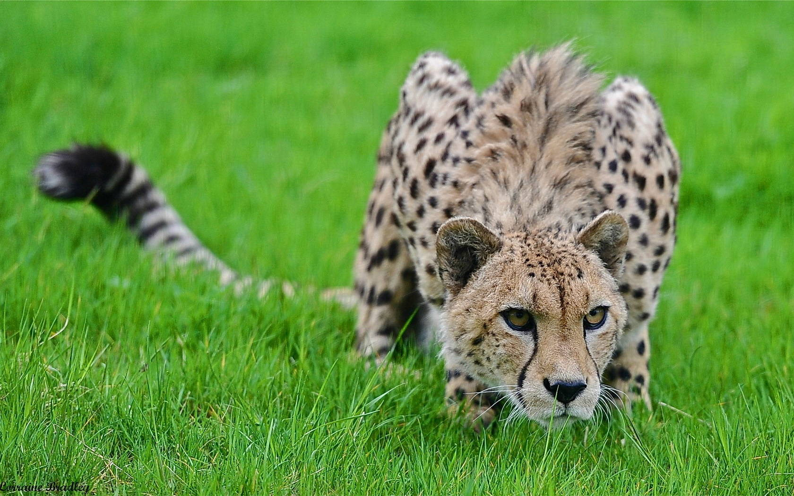

Typically, cheetahs go two or more days between kills, but females with young will try to take at least one gazelle a day. They differ from other cats in their method of hunting. They don't ambush or sneak within springing distance.
Instead, cheetahs approach their prey, typically in plain sight, to within about a hundred meters. Then, suddenly, they charge all out. If they overtake their victim, they bowl it over and strangle it with a bite to the neck.
But their prey often escapes. Moreover, even when are successful, they often have to abandon their kills to lions, or even hyenas, since they aren't really big enough to put up a fight. What do cheetahs eat when they're down on their luck in this way? Mostly, they survive by taking small prey like birds, lizards, and even insects until bigger prey becomes available. Like most animals, they aren't too picky when they're hungry.
Sources:
http://www.macroevolution.net/what-do-cheetahs-eat.html